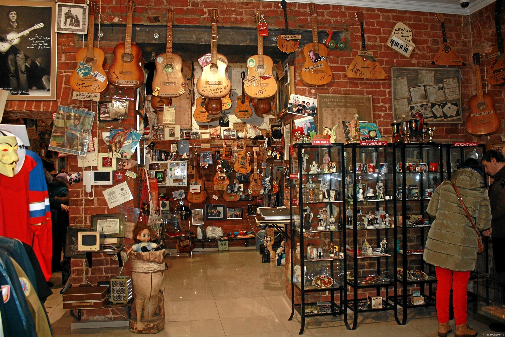

Казанский Кремль - главная достопримечательность Казани и, возможно, всего Татарстана. Булгарская крепость на этом месте появилась в ХII-ХIII вв. Затем на смену ей пришла крепость татарского периода. Однако постройки периода Казанского ханства: ханский дворец, ханские усыпальницы и другие не сохранились (о башне Сююмбеке до сих пор идут споры: большинство учёных склоняется к версии о её строительстве в ХVII веке). Облик Кремля, который мы видим сегодня, формировался на протяжении веков, начиная от завоевания Казани войсками Ивана Грозного, который и принял решения о строительстве нового кремля на месте разрушенного во время штурма, и заканчивая открытием в 2005 году главной соборной мечети Татарстана Кул Шариф. Если осматривать внимательно все достопримечательности Кремля, включая музеи, то на это уйдёт не менее трёх часов. В Кремле находятся резиденция Президента Республики Татарстан, главная мечеть и православный кафедральный Благовещенский собор, разнообразные музеи.
Находится: Казань, Респ. Татарстан, 420014Очень интересный музей. Мы с полной головой окунулись в жизнь и быт прошлой жизни. Интересный факт: тут 453 гитары подписанные или отданы известными исполнителями того времени. Цена билета 450руб на взрослого, но цена полностью оправдана обилием экспонатов!
Находится: ул. Университетская, 6, Казань, Респ. Татарстан, 420000 Музей чак чака-это место, где за чашкой чая вы окунетесь в историю и быт татарского народа, узнать много интересного о традициях и обычаях татар, историю возникновения и секреты приготовления национального блюда чак-чак. Это необычный музей- здесь нет витрин, а все предметы в доме хранят тепло рук наших предков... В разное время года у нас разные истории: -"Сенной базар и татарское купечество" (осень). Раньше наша улица называлась Сенной, так как здесь "кипел" настоящий восточный базар в европейской части России. Вы узнаете как и почему татары были хорошими торговцами с давних времен. -"Булгарский календарь" (зима). Булгарская мифология.
Находится: ул. Парижской Коммуны, 18А, Казань, Респ. Татарстан, 420021